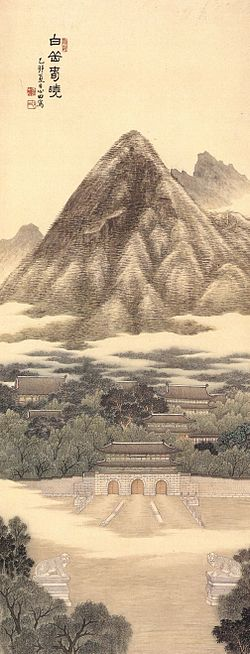

1395년(태조 4년)에 창건하였다. ‘경복(景福)’은 시경에 나오는 말로 왕과 그 자손, 온 백성들이 태평성대의 큰 복을 누리기를 축원한다는 의미다.
풍수지리적으로도 백악산을 뒤로 하고 좌우에는 낙산과 인왕 산으로 둘러싸여 있어 길지의 요건을 갖추고 있다.
1592년, 임진왜란으로 인해 불탄 이후 그 임무를 창덕궁에 넘 겨주었다가 1865년(고종 2년)에 흥선대원군의 명으로 중건되 었다. 일제 강점기에는 조선총독부 건물을 짓는 등 많은 전각 들이 훼손되었으나, 1990년대부터 조선총독부 건물을 철거하 는 등 복원사업을 벌인 덕분에 복원 작업은 현재 거의 완료된 상태이다.